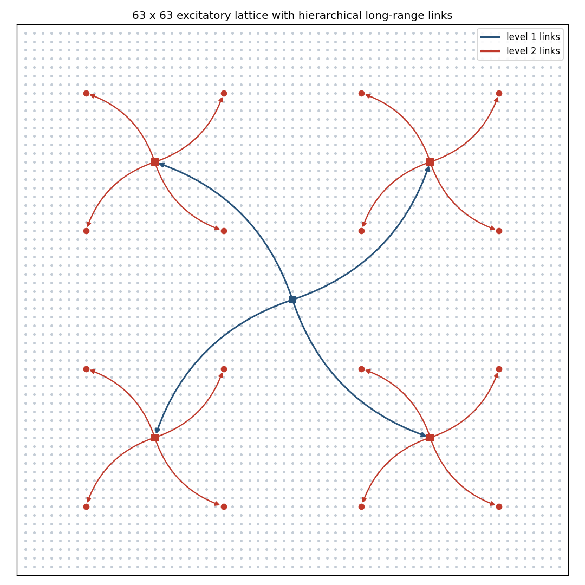

Hybrid Lattice Network
An excitatory–inhibitory lattice with a fractal hierarchy of long-range connections.
The network consists of two $n \times n$ populations on a torus — one excitatory, one inhibitory — with $n = 2^{\,\text{levels}+1} - 1$. Locally the wiring is translation-invariant: every excitatory unit drives its $3 \times 3$ neighborhood in both populations, every inhibitory unit suppresses its $3 \times 3$ neighborhood, and inhibition additionally reaches the surrounding radius-2 ring at half strength, giving activity a local center-surround structure that favors traveling fronts.
On top of the lattice sits the hybrid part: a hierarchy of long-range excitatory links laid out by binary subdivision. The lattice midpoint projects to the midpoints of its four quadrants, each of those to the midpoints of their quadrants, and so on — a self-similar, fractal skeleton of shortcuts connecting scales, reminiscent of the arborization patterns that carry activity between distant patches of cortex. Units are rate neurons: inputs are summed, rectified, and passed through $\tanh$, and any unit that just fired is held silent for a two-step refractory period, which converts standing excitation into propagating waves.

Run the network
The simulation below runs the full rate dynamics live. A seed of activity is planted near the center; waves propagate locally while the long-range links re-inject activity at distant midpoints, and the interplay of excitation, inhibition, and refractoriness determines whether activity dies out, cycles, or sustains itself. If the excitatory population ever goes fully silent, a new random seed is planted near the center, as in the script. All five coupling strengths apply live, so you can steer the dynamics mid-run.
Source code
- Hybrid_Network.py — weight-matrix construction (local kernels + hierarchical links) and the rate dynamics